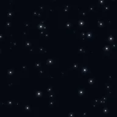

Sterrenveld

Vult de ondoorzichtige delen van de laag met een diep sterrenveld. Verschuiving beweegt door het veld, waarbij nabije sterren verder bewegen dan verre sterren.
Instellingen
| Instelling | Type | Bereik | Standaard |
|---|---|---|---|
| Verschuiving | Punt (X, Y) | -100000 px tot 100000 px | 0 px, 0 px |
| Schaal | Getal | 0.01 tot 9 | 0.3 |
| Helderheid | Getal | 0.001 tot 3 | 0.015 |
| Donkere materie | Getal | 0.001 tot 2 | 0.3 |